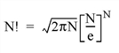

The FACTORIAL function computes the factorial N ! For integers, the factorial is computed as ( N ) • ( N – 1) • ( N – 2) • ... • 3 • 2 • 1. For non-integers the factorial is computed using GAMMA( N +1 ).
This routine is written in the IDL language. Its source code can be found in the file factorial.pro in the lib subdirectory of the IDL distribution.
Result = FACTORIAL( N [, / STIRLING ] [, / UL64 ] )
Returns the product of the non-negative scalar value or array of values.
A non-negative scalar or array of values.
Note: Large values of N will cause floating-point overflow errors. The maximum size of N varies with machine architecture. On machines that support the IEEE standard for floating-point arithmetic, the maximum value of N is 170. See MACHAR for a discussion of machine-specific parameters affecting floating-point arithmetic.
Set this keyword to use Stirling’s asymptotic formula to approximate N !:

where e is the base of the natural logarithm.
Set this keyword to return the results as unsigned 64-bit integers. This keyword is ignored if STIRLING is set.
Note: Unsigned 64-bit integers will overflow for values of N greater than 20.
Compute 20!:
PRINT, FACTORIAL(20)
IDL prints:
2.4329020e+18
|
Pre 4.0 |
Introduced |